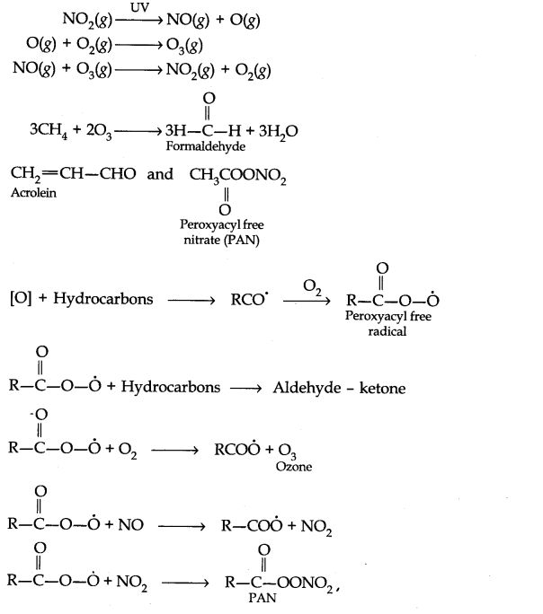

NCERT Solutions for Class 11 Chemistry Chapter 14 Environmental Chemistry
Topics and Subtopics in NCERT Solutions for Class 11 Chemistry Chapter 14 Environmental Chemistry:
| Section Name | Topic Name |
| 14 | Environmental Chemistry |
| 14.1 | Environmental Pollution |
| 14.2 | Atmospheric Pollution |
| 14.3 | Water Pollution |
| 14.4 | Soil Pollution |
| 14.5 | Industrial Waste |
| 14.6 | Strategies to control Environmental Pollution |
| 14.7 | Green Chemistry |
NCERT Solutions Class 11 ChemistryChemistry Lab ManualChemistry Sample Papers
NCERT Class 11 Chemistry Texbook Chapter 14 Solved Questions
Question 1. Define environmental chemistry?
Answer: Environmental Chemistry is the branch of science which deals with the chemical changes in the environment. It includes our surroundings such as air, water, soil, forest etc.
Question 2. Explain the tropospheric pollution in 100 words?
Answer: Tropospheric pollution occurs due to the presence of undesirable substance in air. These may be the solid or gaseous pollutants.
- Gaseous Air Pollutants: These are oxides of sulphur, nitrogen and carbon, hydrogen sulphide, hydrocarbons, ozone and other oxidants.
- Particulate Pollutants: These are dust, mist, fumes, and smog etc.
More Resources for CBSE Class 11
- NCERT Solutions
- NCERT Solutions Class 11 Maths
- NCERT Solutions Class 11 Physics
- NCERT Solutions Class 11 Chemistry
- NCERT Solutions Class 11 Biology
- NCERT Solutions Class 11 Hindi
- NCERT Solutions Class 11 English
- NCERT Solutions Class 11 Business Studies
- NCERT Solutions Class 11 Accountancy
- NCERT Solutions Class 11 Psychology
- NCERT Solutions Class 11 Entrepreneurship
- NCERT Solutions Class 11 Indian Economic Development
- NCERT Solutions Class 11 Computer Science
Question 3. Carbon monoxide gas is more dangerous than carbon dioxide gas. Why?
Answer: Carbon monoxide combines with haemoglobin to form a very stable compound known as carboxyhaemoglobin when its concentration in blood reaches 3-4%, the oxygen carrying capacity of the blood is greatly reduced. This results into headache, nervousness and sometimes death of the person. On the other hand CO2 does not combine with haemoglobin and hence is less harmful than CO.
Question 4. Which gases are responsible for greenhouse effect? List some of them.
Answer: CO2 is mainly responsible for greenhouse effect. Other greenhouse gases are methane, nitrous oxide, water vapours, CFCs and Ozone.
Question 5. Statues and monuments in India are affected by acid rain. How?
Answer: This is mainly due to the large number of industries and power plants in the nearby areas. Acid rain has vapours of sulphuric acid dissolved in it. When it comes in contact with various statues or monuments, the acid reacts chemically with calcium carbonate.
CaCO3 + H2SO4 ——–> CaSO4 + H2O + CO2
Question 6. What is smog? How is classical smog different from photochemical smog?
Answer: The word smog is a combination of smoke and fog. It is a type of air pollution that occurs in many cities throughout the world. Classical smog occurs in cool humid climate. It is also called as reducing smog.Whereas photochemical smog occurs in warm and dry sunny climate. It has high concentration of oxidising agents and therefore, it is also called as oxidising smog.
Question 7. Write down the reactions involved during the formation of photochemical smog.
Answer: Mechanism of formation of photochemical smog:

Question 8. What are the harmful effects of photochemical smog and how can they be controlled?
Answer: Harmful effects of photochemical smog:
- Their’high concentration causes headache, chest pain and dryness of the throat.
- Ozone and PAN act as powerful eye irritants.
- Photochemical smog leads to cracking of rubber and extensive damage to plant life.
- It causes corrosion of metals, stones, building materials, and painted surface etc.
Control:
- Use of catalytic converter in automobiles prevents the release of nitrogen dioxide and hydrocarbons to the atmosphere.
- Pinus, juniparus, quercus, pyrus etc. can metabolise nitrogen dioxide thus their plantation could help to some extent.
Question 9. What are the reactions involved for ozone layer depletion in the stratosphere?
Answer: The reaction can be shown as follows:
CF2Cl2(g) + UV ——-> Cl(g) + CF2Cl(g)
Cl(g) + O3(g) ———-> ClO (g) + O2(g)
ClO(g) + O(g) ———> Cl + O2(g)
Question 10. What do you mean by ozone hole? What are its consequences?
Answer: Depletion of ozone layer creates some sort of holes in the blanket of ozone which
surround us, this is known as ozone hole.
- With the depletion of the ozone layer, UV radiation filters into the troposphere which leads to aging of skin, cataract, sunburn, skin cancer etc.
- By killing many of the phytoplanktons, it can damage the fish productivity.
- Evaporation rate increases through the surface and stomata of leaves which can decrease the moisture content of the soil.
Question 11. What are the major causes of water pollution? Explain.
Answer: Causes of water pollution:
- Pathogens: Pathogens include bacteria and other microorganisms that enter water from domestic sewage and animal excreta.
Human excreta contain bacteria such as Escherichia coli and Streptococcus faecalis ,
which cause gastrointestinal diseases. - Organic wastes: Organic wastes when added to water, as these are biodegradable, bacteria decomposes organic matter and consume dissolved oxygen in water. When the concentration of dissolved oxygen of water is below 6 ppm, the growth of fish gets inhibited. Breakdown of the organic wastes by anaerobic bacteria produces chemicals that have a foul smell and are harmful to human health.
- Chemical pollutants: Some inorganic chemicals as an industrial wastes dissolve in water like cadmium, mercury nickel etc. These metals are dangerous to humans and other animals. These metals can damage kidneys and central nervous system,lever etc. Petroleum products pollute many sources of water.
Question 12. What do you mean by Biochemical Oxygen Demand (BOD)?
Answer: The amount of oxygen required by bacteria to breakdown the organic matter present in a certain volume of a sample of water is called Biochemical Oxygen Demand (BOD).
Question 13. What are pesticides and herbicides? Explain giving examples.
Answer: Pesticides are the chemical compounds used in agriculture to control the damages caused by insects, rodents, weeds and various crop diseases.
Example: Aldrin, Dilldrin, B.H.C etc.
Herbicides: These are the chemicals used to control weeds.
Example: Triazines.
Question 14. What do you mean by green chemistry? How will it help in decreasing environmental pollution ?
Answer: Green chemistry is a way of thinking and is about utilising the existing knowledge and principles of chemistry and other sciences to reduce the adverse effect of pollution.
For example:
- Automobile engines have been fitted with catalytic converters which prevent the release of the vapours of hydrocarbons and oxides of nitrogen into acrolein and peroxyacetyl nitrate.
- CO2 has replaced CFCs as blowing agents in the manufacture of polystyrene foam sheets.
Question 15. What would have happened if the greenhouse gases were totally missing in the earth’s atmosphere? Discuss.
Answer: The solar energy radiated back from the earth surface is absorbed by the green house gases. (CO2, CH4, O3, CFCs) are present near the earth’s surface.
They heat up the atmosphere near the earth’s surface and keep it warm. As a result of these, there is growth of vegetation which supports the life. In the absence of this effect, there will be no life of both plant and animal on the surface of the earth.
Question 16. A large number offish are suddenly found floating dead on a lake. There is no evidence of toxic dumping but you find an abundance of phytoplankton. Suggest a reason for the fish kill.
Answer: Excessive phytoplankton (organic pollutants such as leaves, grass trash etc.) present in water are biodegradable. Bacteria decomposes these organic matters in water. During this process when large number of bacteria decomposes these organic matters, they-consume the dissolved oxygen in water. When the level of dissolved oxygen falls below 6 ppm the fish cannot survive.
Question 17. How can domestic waste be used as manure?
Answer: Domestic waste consists of biodegradable waste which can be converted into manure by suitable method.
Question 18. For your agricultural field or garden you have developed a compost producing pit. Discuss the process in the light of bad odour, flies and recycling of wastes for a good produce.
Answer: The compost producing pit should be kept covered so that flies cannot make entry into it and bad odour is minimized.
The waste materials which are non-biodegradable like glasses, plastic bags, polybags, must be handed over to the vendors who can send them to the recycling plants.
MORE QUESTIONS SOLVED
NCERT Solutions for Class 11 Chemistry Chapter 14 Very Short Answer Type Questions
Question 1. What do you mean by primary and secondary pollutants of the air?
Answer: Primary pollutants are those which after their formation remains as it was before e.g., NO. Secondary pollutants are formed as a reaction with primary pollutants e.g., PAN (peroxyacyl nitrates).
Question 2. What is the name of the compound formed when CO combines with blood?
Answer: Carboxyhaemoglobin.
Question 3. How are NO and NO2 formed in the atmosphere?
Answer: NO is formed due to the reaction between N2 and O2 during lightning or by the combustion of fossil fuels.NO is oxidised to form NO2.
Question 4. What is chlorosis?
Answer: Slowdown of process of formation of chlorophyll in plants with the presence of SO2 is called chlorosis.
Question 5. Which zone is known as ozonosphere?
Answer: Stratosphere.
Question 6. Which main gases is responsible for damage in ozone layer?
Answer: NO and CFCs
Question 7. What is the nature of classical smog?
Answer: Reducing.
Question 8. Name the acids which are responsible for acid rain?
Answer: H2SO4, HNO3 and HCl.
Question 9. What is BOD?
Answer: The amount of oxygen consumed by micro organism in decomposing organic wastes of sewage water is called BOD (Biochemical Oxygen Demand).
Question 10. What do you mean by viable and non-viable particulates?
Answer: Viable particulates are microorganisms like bacteria, fungi, moulds, algae etc. Non- viable particulates are formed by the disintegration of bigger size particles or by the condensation of water vapour, e.g., mist, smoke, fume and dust.
Question 11. What is siltation?
Answer: Mixing of soil or rock particles in water is called siltation.
Question 12. What is the composition of London Smog?
Answer: London Smog consists H2SO4 deposited on the particulates suspended in the atmosphere.
Question 13. List out the gases which are considered as major source of air pollution.
Answer: Carbon monoxide (CO), sulphur dioxide (SO2) and oxides of nitrogen (NO2).
Question 14. Why is acid rain considered as threat to Taj Mahal ?
Answer: Acids present in acid rain can react with marble (CaCO3) and damage the monument.
Question 15. Give one example of organic herbicide.
Answer: Triazines.
Question 16. What are pesticides ?
Answer: Pesticides are the substances used to kill unwanted pests. For example, DDT.
Question 17. What is PAN stands for?
Answer: It is peroxyacetyl nitrate.
Question 18. Give the examples of insecticides.
Answer: DDT, BHC.
Question 19. Which gas was mainly responsible for Bhopal gas tragedy?
Answer: Methyl isocyanate.
Question 20. What is meant by polar vortex?
Answer: A tight whirlpool of wind formed in the stratosphere which surrounds Antarctica is called polar vortex.
Question 21. What should be the tolerable limit of F ions in drinking water?
Answer: 1 ppm or 1 mg dm-3.
NCERT Solutions for Class 11 Chemistry Chapter 14 Short Answer Questions
Question 1. How did carbon monoxide act as a poison for human beings?
Answer: Carbon monoxide is poisonous because it combines with hemoglobin of R.B.C. to form carboxyhemoglobin as.

It inhibits the transport of oxygen to different parts of the body. Thus the body becomes oxygen-starved.
Question 2. What is ‘Acid Rain’? How is it harmful to the environment?
Answer: Acid rain is the rain water mixed with small amount of sulphuric acid, nitric acid along with hydrochloric acid which are formed from the oxides of sulphur and nitrogen present in air as pollutants. It has a pH of 4-5.
Harmful effects of Acid Rain
- It is toxic to vegetation and aquatic life.
- It damages buildings and statues. Taj Mahal has been damaged by acid rain.
- Acid rain corrodes water conducting pipes resulting in the leaching of heavy metals such as iron, lead, etc., to the drinking water.
Question 3. What is photochemical smog? What are its effects? How can it be controlled?
Answer: This is a type of smog formed in warm, dry and sunny climate. They are formed when sunlight is absorbed by SO2, oxides of nitrogen and hydrocarbons.
They act as oxidising agents.
Effects of photochemical smog
- They produce irritation in the eyes and also in respiratory system.
- They can damage many materials such as metals, stones, building materials etc.
- NO2 present gives a brown colour to the photochemical smog which reduces visibility.
- It is harmful to fabrics, crops and ornamental plants.
Control of photochemical smog
- By using catalytic converters in automobiles.
- By spraying certain compounds into atmosphere which generate free radicals that can easily combine with the free radicals that initiate the reaction forming toxic compounds of photochemical smog.
- Certain plants such as pinus, juniparus, pyrus could be helpul in this matter.
Question 4. What do you mean by greenhouse effect? What is the role of CO2 in the greenhouse effect?
Answer: It is the phenomenon in which earth’s atmosphere traps the heat from the sun and prevents it from escaping in outer space. Gases such as CO2, methane, ozone, CFCs are believed to be responsible for this effect.Heat from the sun after being absorbed by the earth is absorbed by CO2 and then radiated back to the earth. Thus making the environment of the earth warm.
Question 5. (a) Define eutrophication and pneumoconiosis.
(b) Write difference between photochemical and classical smog.
Answer: (a) Eutrophication: When the growth of algaes increases in the surface of water, dissolved oxygen in water is reduced. This phenomenon is known as eutrophication. (Due to this growth of fish gets inhibited).
Pneumoconiosis: It is a disease which irritates lungs. It causes scarring or fibrosis of the lung.
(b)
| Photochemical smog | Classical smog |
| (i) It is formed as a result of photochemical decomposition of nitrogen dioxide and chemical reactions involving hydrocarbons. (ii) It takes place during dry warm season in presence of sunlight. (iii) It is oxidising in nature. |
(i) It is formed due to condensation of SO, vapours on particles of carbon in cold climate. (ii) It is generally formed during winter when there is severe cold. (iii) It is reducing in nature. |
NCERT Solutions for Class 11 Chemistry Chapter 14 Multiple Choice Questions
Question 1. Which of the following acid is most abundant in acid rain?
(a) HCl (b) HNO3 (c) H2SO4 (d)Organic acid
Question 2. Which of the following causes less pollution?
(a) NOx (b) SOx (c) CO2 (d) CxHy
Question 3. Besides CO2, the other greenhouse gas is
(a) Ar (b) N2 (C) O2 (d) CH4
Question 4. BOD is a measure of
(a) Organic pollutant in water (b) Inorganic pollutant in water
(c) Particulate matter in water (d) All of the above
Question 5. The gas which reacts with hemoglobin in blood is
(a) CO (b) SO2 (c) CO2 (d) NO2
Question 6. Ozone depletion is mainly due to
(a) HCFs (b) CFCs (c) CH3Br (d)all of the above
Question 7. The pollutant released in Bhopal gas tragedy was
(a) Ammonia (b) Mustard gas (c) Nitrous oxide (d) Methyl isocyanate
Question 8. Which of the following will increase the BOD of water supply?
(a) O3 (b) C2H5OH (C) H2O (d) CO2
Answer: 1.(c) 2. (c) 3. (d) 4. (a) 5. (a) 6.(b) 7. (d) 8. (c)
NCERT Solutions for Class 11 Chemistry Chapter 14 Hots Questions
Question 1. What is meant by PCBs?
Answer: PCBs are polychlorinated biphenyls. They are contaminants of water. They are used as fluids in transformers and capacitors.
Question 2. What is the compound formed when CO combines with blood?
Answer: When CO combines with blood, the following reaction occurs forming carboxyhaemoglobin:-
HB + CO —> (HBCO) Carboxyhaemoglobin
Question 3. Give three examples in which green chemistry has been applied.
Answer:
- In dry-cleaning, use of liquefied CO2 in place of tetrachloroethene (Cl2C = CCl2).
- In bleaching of paper using H2O2 in place of chlorine.
- In the manufacture of chemicals like ethanal using environment-friendly chemicals and conditions.